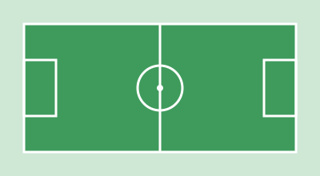

Club Social y Deportivo Los Algarrobos
Deporte, amistad y comunidad en la zona norte de Córdoba. Más de 650 socios y 8 actividades para chicos y adultos.
Ver actividadesNuestra historia

El club nació en 1962, cuando un grupo de vecinos del barrio se juntaba a jugar a la pelota bajo los algarrobos de un terreno baldío. Con rifas, peñas y mucho trabajo voluntario se levantó la primera cancha y, años después, el salón y la pileta.
Hoy seguimos siendo un club de barrio: las cuotas son accesibles, los profes son del barrio y las familias participan de la vida del club.
Qué ofrecemos
- Para chicos: fútbol infantil, básquet juvenil, patín artístico y natación.
- Para adultos: vóley mixto, funcional, yoga y ajedrez.
- Bonificación: 10 % de descuento con 2 actividades y 15 % con 3.
Dónde estamos
Av. de los Algarrobos 1450, barrio Los AlgarrobosZona norte, ciudad de Córdoba
Llegan las líneas de colectivo 20, 21 y 70. Hay bicicletero en la entrada.